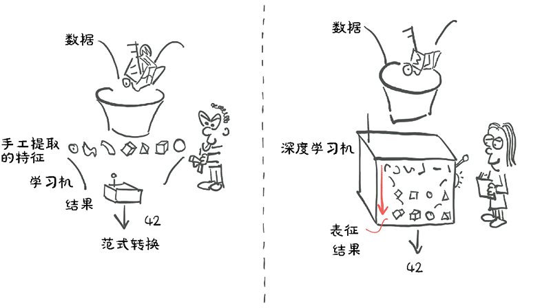
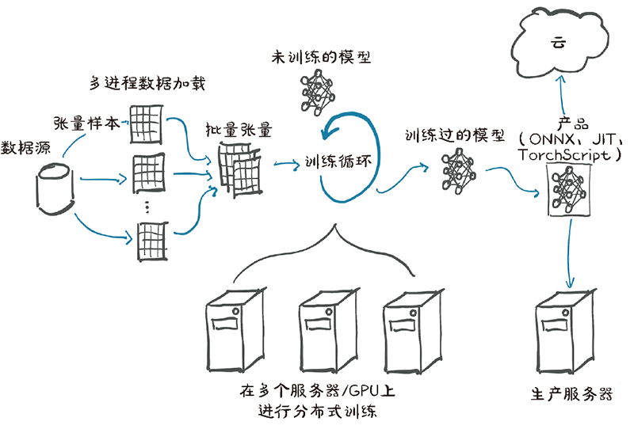

首页 > 编程笔记
Python PyTorch库介绍（非常详细）
PyTorch 是一个 Python 程序库，有助于构建深度学习项目。
PyTorch 强调灵活性，并允许用深度学习领域惯用的 Python 来表示深度学习模型。PyTorch 的易用性使得它在研究社区中有了早期的使用者，并且在第 1 次发布之后的几年里，它已经成为应用程序中使用最广泛的深度学习工具之一。
正如 Python 在编程方面所做的那样，PyTorch 也为深度学习提供了很好的入门指南。同时，PyTorch 已经被证明完全可以在实际项目和高规格的专业环境下使用。我们相信 PyTorch 凭借其清晰的语法、精简的 API 和易于调试的优点将成为入门深度学习的最佳选择。
图 1 中的深度学习机的核心是一个相当复杂的数学函数，它将输入映射到输出。为了便于表达这个函数，PyTorch 提供了一个核心数据结构，就是张量，它是一个多维数组，与 NumPy 数组有许多相似之处。在这个基础上，PyTorch提供了在专用硬件上执行加速数学操作的特性，这使得神经网络结构设计以及在单机或并行计算资源上训练它们变得很方便。
PyTorch 很容易被推广，因为它很简单。许多研究人员和实践者发现它易于学习、使用、扩展和调试。它是 Python 化的，虽然和任何复杂领域一样，它有注意事项和最佳实践示例，但对于以前使用过 Python 的开发人员来说，使用该库和使用其他 Python 库一样。
更具体地说，在 PyTorch 中编写深度学习机是很自然的事情。PyTorch 为我们提供了一种数据类型，即张量，通常用来存储数字、向量、矩阵和数组。此外，PyTorch 还提供了操作它们的函数，我们可以使用这些函数来增量编程。如果我们愿意，还可以进行交互式编程，就像平常使用 Python 一样。如果你知道 NumPy，那么你对交互式编程应是非常熟悉的。
PyTorch 具备 2 个特性，使得它与深度学习关联紧密。首先，它使用 GPU 加速计算，通常比在 CPU 上执行相同的计算速度快 50 倍。其次，PyTorch 提供了支持通用数学表达式数值优化的工具，该工具用于训练深度学习模型。
PyTorch 从研发到成为产品的过程是一件值得关注的事情。虽然 PyTorch 最初专注于研究工作流，但它已经配备了高性能的 C++ 运行环境，用于部署模型进行推理而不依赖 Python，并且还可用于设计和训练C++模型。
PyTorch 还提供了与其他语言的绑定，以及用于部署到移动设备的接口。这些特性允许我们利用 PyTorch 的灵活性，还允许我们的程序在难以获得完整的 Python 运行环境或可能需要极大的开销的情况下运行。
在接下来大约 2 年的时间里，情况发生了巨大的变化。除了一些特定领域的库，随着其他深度学习库使用量的减少，PyTorch 和 TensorFlow 社区的地位得到了巩固。变化情况可以总结为以下几点：
1) Theano是最早的深度学习框架之一，目前它已经停止开发。
2) TensorFlow：
3) PyTorch：
TensorFlow 拥有强大的生产线、广泛的行业社区以及巨大的市场份额。由于使用方便，PyTorch 在研究和教学领域取得了巨大进展，并且随着研究人员和毕业的学生进入该行业，PyTorch 的势头越来越好。它还在生产解决方案方面积累了经验。
有趣的是，随着 TorchScript 和急切模式的出现，PyTorch 和 TensorFlow 的特征集开始趋同，尽管在这些特征的呈现和整体体验上仍然存在很大的差异。
首先，正如 Python 一样，PyTorch 有一个扩展名为“.py”的文件，但在该文件中有很多非 Python 代码。事实上，由于性能原因，PyTorch 大部分是用 C++ 和 CUDA 编写的，CUDA 是一种来自英伟达的类 C++ 的语言，可以被编译并在 GPU 上以并行方式运行。有一些方法可以直接在C++环境中运行PyTorch，但是大多数情况下我们都是使用 Python 来与 PyTorch 交互的，包括构建模型、训练模型以及使用训练过的模型解决实际问题等。
实际上，Python API 正是 PyTorch 在可用性以及与更广泛 Python 生态系统集成方面的亮点。让我们来看看 PyTorch 的心智模型。
正如我们前面已经提到的那样，PyTorch 的核心是一个提供多维数组（张量）以及由 torch 模块提供大量操作的库。张量及操作可以在 CPU 或 GPU 上使用。在 PyTorch 中，将运算从 CPU 转移到 GPU 不需要额外的函数调用。
PyTorch 提供的第 2 个核心功能是张量可以跟踪对其执行的操作的能力，并分析和计算任何输入对应的输出的导数。该功能用于数值优化，是由张量自身提供的，通过 PyTorch 底层自动求导引擎来调度。
通过使用张量以及张量自动求导的标准库，PyTorch 可以用于物理学、渲染、优化、仿真、建模等，而且我们很可能会看到 PyTorch 在科学应用的各个领域以创造性的方式使用。但 PyTorch 首先是一个深度学习库，因此它提供了构建和训练神经网络所需的所有构建模块。
下图展示了完成一个深度学习项目的标准步骤，从加载数据到训练模型，最后将该模型部署到生产中。
用于构建神经网络的 PyTorch 核心模块位于 torch.nn 中，它提供了通用的神经网络层和其他架构组件，这些组件可用于构建和初始化图 2 所示的未训练的模型。为了训练模型，我们需要一些额外的东西：模型训练的数据源、一个使模型适应训练数据的优化器，以及一种把模型和数据传输到硬件的方法，该硬件用于执行模型训练所需的计算。
在图 2 的左侧，我们看到训练数据在到达模型之前，需要进行大量的数据处理。首先，我们需要从外部获取数据，通常是从作为数据源的某种存储中获取数据。然后我们需要将数据中的每个样本转换成 PyTorch 可以处理的张量。数据预处理是我们自定义数据（无论什么样的格式）与 PyTorch 中 torch.utils.data 包下的 Dataset 类提供的标准张量之间的桥梁。由于不同问题处理过程截然不同，因此我们需要自己定义数据源。
由于数据存储通常很慢，还存在访问延迟，因此我们希望并行化数据加载。但是，由于 Python 提供的许多操作都不具有简单、高效的并行处理能力，因此我们需要多个进程来加载我们的数据，以便将它们组装成一个批次，即组装成一个包含多个样本的张量。这是相当复杂的，但由于它也是相对通用的，PyTorch 很容易在 DataLoader 类中实现这些功能。它的实例可以生成子进程在后台从数据集中加载数据，提前将数据准备就绪，一旦训练循环开始就可以立即使用。
有了获取成批样本的机制，我们可以转向图 2 中心的训练循环。通常训练循环被实现为标准的 Python for 循环。在最简单的情况下，模型在本地 CPU 或单个 GPU上 执行所需的计算，一旦训练循环获得数据，计算就可以立即开始。
在训练循环的每个步骤中，我们根据从数据加载器获得的样本来评估模型。然后我们使用某种准则或损失函数将模型的输出与期望的输出（目标）进行比较。PyTorch 除了提供构建模型的组件，也有各种损失函数供我们使用，torch.nn 包中也提供这些函数。在我们用损失函数将实际输出与期望的输出进行比较之后，我们需要稍微修改模型以使其输出更接近目标。正如前面提到的，这正是PyTorch底层的自动求导引擎的用武之地。但是我们还需要一个优化器来进行更新，这是 PyTorch 在 torch.optiom 中为我们提供的。
使用更精细的硬件越来越普遍，如多 GPU 或多个服务器，将这些资源用于训练大型模型，如图 2 的底部中间部分所示。在这些情况下，torch.nn.parallel.DistributedDataParallel 和 torch. distributed 子模块可用于使用附加的硬件。
训练循环可能是深度学习项目中最乏味和耗时的部分。训练循环结束后，我们将得到一个模型，该模型的参数已经在我们的任务上得到了优化，如图 2 训练循环右侧部分所示的训练过的模型。有一个用来解决任务的模型是很好的，但是为了使它有用，我们需要将其放在需要工作的地方。如图 2 所示，在其右侧所示的部署部分可能涉及将模型放在生产服务器上，或将模型导出到云中，或者我们可将它与更大的应用程序集成，抑或在手机上运行它。
部署操作中一个特定的步骤是导出模型。如前所述，PyTorch 默认为立即执行模式（急切模式）。每当 Python 解释器执行一个包含“PyTorch”的指令，相应的操作就会立即被底层的 C++ 或 CUDA 的实现来执行。随着对张量进行操作的指令越来越多，后端实现将执行更多的操作。
PyTorch 还提供了一种通过 TorchScript 提前编译模型的方法。使用 TorchScript，PyTorch 可以将模型序列化为一组独立于 Python 调用，如在 C++ 程序或在移动设备上调用的指令集。我们可以把模型想象成一个具有有限指令集的虚拟机，用于特定的张量操作。这允许我们导出我们的模型，或者将其作为用于 PyTorch 运行时的 TorchScript 导出，或者将其以一种称为 ONNX 的标准格式导出，这些特性是 PyTorch 生产部署的基础。
PyTorch 强调灵活性，并允许用深度学习领域惯用的 Python 来表示深度学习模型。PyTorch 的易用性使得它在研究社区中有了早期的使用者，并且在第 1 次发布之后的几年里，它已经成为应用程序中使用最广泛的深度学习工具之一。
正如 Python 在编程方面所做的那样，PyTorch 也为深度学习提供了很好的入门指南。同时，PyTorch 已经被证明完全可以在实际项目和高规格的专业环境下使用。我们相信 PyTorch 凭借其清晰的语法、精简的 API 和易于调试的优点将成为入门深度学习的最佳选择。

图 1 随着数据和计算需求的增加，深度学习不再需要手工提取特征
图 1 随着数据和计算需求的增加，深度学习不再需要手工提取特征
图 1 中的深度学习机的核心是一个相当复杂的数学函数，它将输入映射到输出。为了便于表达这个函数，PyTorch 提供了一个核心数据结构，就是张量，它是一个多维数组，与 NumPy 数组有许多相似之处。在这个基础上，PyTorch提供了在专用硬件上执行加速数学操作的特性，这使得神经网络结构设计以及在单机或并行计算资源上训练它们变得很方便。
PyTorch库的优势
通过将模型应用到例证，深度学习允许我们执行很多复杂任务，如机器翻译、玩战略游戏以及在杂乱无章的场景中识别物体等。为了在实践中做到这一点，我们需要灵活且高效的工具，以便能够适用于这些复杂任务，能够在合理的时间内对大量数据进行训练。我们需要已被训练过的模型在输入变量变化的情况下正确执行。接下来看看我们决定使用 PyTorch 的一些原因。PyTorch 很容易被推广，因为它很简单。许多研究人员和实践者发现它易于学习、使用、扩展和调试。它是 Python 化的，虽然和任何复杂领域一样，它有注意事项和最佳实践示例，但对于以前使用过 Python 的开发人员来说，使用该库和使用其他 Python 库一样。
更具体地说，在 PyTorch 中编写深度学习机是很自然的事情。PyTorch 为我们提供了一种数据类型，即张量，通常用来存储数字、向量、矩阵和数组。此外，PyTorch 还提供了操作它们的函数，我们可以使用这些函数来增量编程。如果我们愿意，还可以进行交互式编程，就像平常使用 Python 一样。如果你知道 NumPy，那么你对交互式编程应是非常熟悉的。
PyTorch 具备 2 个特性，使得它与深度学习关联紧密。首先，它使用 GPU 加速计算，通常比在 CPU 上执行相同的计算速度快 50 倍。其次，PyTorch 提供了支持通用数学表达式数值优化的工具，该工具用于训练深度学习模型。
PyTorch 设计的驱动因素之一是表现力，它允许开发人员实现复杂的模型，而不会被 PyTorch 库强加过高的复杂性（PyTorch 不是一个框架）。PyTorch 可以说是最无缝地将深度学习领域的思想转化为 Python 代码的软件之一，因此 PyTorch 在研究中得到广泛的采用。请注意，这 2 个特性适用于一般的科学计算，而不只适用于深度学习。事实上，我们完全可以将 PyTorch 描述为一个在 Python 中为科学计算提供优化支持的高性能库。
PyTorch 从研发到成为产品的过程是一件值得关注的事情。虽然 PyTorch 最初专注于研究工作流，但它已经配备了高性能的 C++ 运行环境，用于部署模型进行推理而不依赖 Python，并且还可用于设计和训练C++模型。
PyTorch 还提供了与其他语言的绑定，以及用于部署到移动设备的接口。这些特性允许我们利用 PyTorch 的灵活性，还允许我们的程序在难以获得完整的 Python 运行环境或可能需要极大的开销的情况下运行。
深度学习竞争格局
虽然所有的类比都有瑕疵，但 2017 年 1 月 PyTorch 0.1 的发布标志着深度学习库、包装器和数据交换格式从“寒武纪”爆炸式增长过渡到一个整合和统一的时代。PyTorch 第 1 个测试版本发布时情况如下：注意，当前深度学习发展迅速，以至于当你读到本节时，它可能已经过时了，如果你不了解这里提到的一些库也很正常。
- Theano和TensorFlow是最早的低级别库，它们使用一个模型，该模型让用户自定义一个计算图，然后执行它。
- Lasagne和Keras是Theano的高级包装器，同时Keras还对TensorFlow和CNTK进行了包装。
- Caffe、Chainer、DyNet、Torch（以Lua为基础的PyTorch前身）、MXNet、CNTK、DL4J等库在深度学习生态系统中占据了不同的位置。
在接下来大约 2 年的时间里，情况发生了巨大的变化。除了一些特定领域的库，随着其他深度学习库使用量的减少，PyTorch 和 TensorFlow 社区的地位得到了巩固。变化情况可以总结为以下几点：
1) Theano是最早的深度学习框架之一，目前它已经停止开发。
2) TensorFlow：
- 完全对Keras进行封装，将其提升为一流的API；
- 提供了一种立即执行的“急切模式（eager mode）”，这种模式有点儿类似于PyTorch处理计算的方式；
- TensorFlow 2.0默认采用急切模式。
- JAX是谷歌的一个库，它是独立于TensorFlow开发的，作为一个与GPU、Autograd和JIT编译器具有对等功能的NumPy库，它已经开始获得关注。
3) PyTorch：
- Caffe2 完全并入 PyTorch，作为其后端模块；
- 替换了从基于 Lua 的 Torch 项目重用的大多数低级别代码；
- 增加对开放式神经网络交换（Open Neural Network Exchange，ONNX）的支持，这是一种与外部框架无关的模型描述和交换格式；
- 增加一种称为“TorchScript”的延迟执行的“图模型”运行环境；
- 发布了 1.0 版本；
- 取代 CNTK 和 Chainer 成为各自企业赞助商选择的框架。
TensorFlow 拥有强大的生产线、广泛的行业社区以及巨大的市场份额。由于使用方便，PyTorch 在研究和教学领域取得了巨大进展，并且随着研究人员和毕业的学生进入该行业，PyTorch 的势头越来越好。它还在生产解决方案方面积累了经验。
有趣的是，随着 TorchScript 和急切模式的出现，PyTorch 和 TensorFlow 的特征集开始趋同，尽管在这些特征的呈现和整体体验上仍然存在很大的差异。
PyTorch是如何支持深度学习的
我们已经提及了 PyTorch 的一些构成要素，接下来我们将正式介绍 PyTorch 的主要组件的高级映射。我们可以通过查看一个 PyTorch 深度学习项目所需要的组件来更好地了解这些内容。首先，正如 Python 一样，PyTorch 有一个扩展名为“.py”的文件，但在该文件中有很多非 Python 代码。事实上，由于性能原因，PyTorch 大部分是用 C++ 和 CUDA 编写的，CUDA 是一种来自英伟达的类 C++ 的语言，可以被编译并在 GPU 上以并行方式运行。有一些方法可以直接在C++环境中运行PyTorch，但是大多数情况下我们都是使用 Python 来与 PyTorch 交互的，包括构建模型、训练模型以及使用训练过的模型解决实际问题等。
实际上，Python API 正是 PyTorch 在可用性以及与更广泛 Python 生态系统集成方面的亮点。让我们来看看 PyTorch 的心智模型。
正如我们前面已经提到的那样，PyTorch 的核心是一个提供多维数组（张量）以及由 torch 模块提供大量操作的库。张量及操作可以在 CPU 或 GPU 上使用。在 PyTorch 中，将运算从 CPU 转移到 GPU 不需要额外的函数调用。
PyTorch 提供的第 2 个核心功能是张量可以跟踪对其执行的操作的能力，并分析和计算任何输入对应的输出的导数。该功能用于数值优化，是由张量自身提供的，通过 PyTorch 底层自动求导引擎来调度。
通过使用张量以及张量自动求导的标准库，PyTorch 可以用于物理学、渲染、优化、仿真、建模等，而且我们很可能会看到 PyTorch 在科学应用的各个领域以创造性的方式使用。但 PyTorch 首先是一个深度学习库，因此它提供了构建和训练神经网络所需的所有构建模块。
下图展示了完成一个深度学习项目的标准步骤，从加载数据到训练模型，最后将该模型部署到生产中。

图 2 PyTorch项目的基础、高级结构，包括数据加载、训练和生产部署等
图 2 PyTorch项目的基础、高级结构，包括数据加载、训练和生产部署等
用于构建神经网络的 PyTorch 核心模块位于 torch.nn 中，它提供了通用的神经网络层和其他架构组件，这些组件可用于构建和初始化图 2 所示的未训练的模型。为了训练模型，我们需要一些额外的东西：模型训练的数据源、一个使模型适应训练数据的优化器，以及一种把模型和数据传输到硬件的方法，该硬件用于执行模型训练所需的计算。
在图 2 的左侧，我们看到训练数据在到达模型之前，需要进行大量的数据处理。首先，我们需要从外部获取数据，通常是从作为数据源的某种存储中获取数据。然后我们需要将数据中的每个样本转换成 PyTorch 可以处理的张量。数据预处理是我们自定义数据（无论什么样的格式）与 PyTorch 中 torch.utils.data 包下的 Dataset 类提供的标准张量之间的桥梁。由于不同问题处理过程截然不同，因此我们需要自己定义数据源。
由于数据存储通常很慢，还存在访问延迟，因此我们希望并行化数据加载。但是，由于 Python 提供的许多操作都不具有简单、高效的并行处理能力，因此我们需要多个进程来加载我们的数据，以便将它们组装成一个批次，即组装成一个包含多个样本的张量。这是相当复杂的，但由于它也是相对通用的，PyTorch 很容易在 DataLoader 类中实现这些功能。它的实例可以生成子进程在后台从数据集中加载数据，提前将数据准备就绪，一旦训练循环开始就可以立即使用。
有了获取成批样本的机制，我们可以转向图 2 中心的训练循环。通常训练循环被实现为标准的 Python for 循环。在最简单的情况下，模型在本地 CPU 或单个 GPU上 执行所需的计算，一旦训练循环获得数据，计算就可以立即开始。
在训练循环的每个步骤中，我们根据从数据加载器获得的样本来评估模型。然后我们使用某种准则或损失函数将模型的输出与期望的输出（目标）进行比较。PyTorch 除了提供构建模型的组件，也有各种损失函数供我们使用，torch.nn 包中也提供这些函数。在我们用损失函数将实际输出与期望的输出进行比较之后，我们需要稍微修改模型以使其输出更接近目标。正如前面提到的，这正是PyTorch底层的自动求导引擎的用武之地。但是我们还需要一个优化器来进行更新，这是 PyTorch 在 torch.optiom 中为我们提供的。
使用更精细的硬件越来越普遍，如多 GPU 或多个服务器，将这些资源用于训练大型模型，如图 2 的底部中间部分所示。在这些情况下，torch.nn.parallel.DistributedDataParallel 和 torch. distributed 子模块可用于使用附加的硬件。
训练循环可能是深度学习项目中最乏味和耗时的部分。训练循环结束后，我们将得到一个模型，该模型的参数已经在我们的任务上得到了优化，如图 2 训练循环右侧部分所示的训练过的模型。有一个用来解决任务的模型是很好的，但是为了使它有用，我们需要将其放在需要工作的地方。如图 2 所示，在其右侧所示的部署部分可能涉及将模型放在生产服务器上，或将模型导出到云中，或者我们可将它与更大的应用程序集成，抑或在手机上运行它。
部署操作中一个特定的步骤是导出模型。如前所述，PyTorch 默认为立即执行模式（急切模式）。每当 Python 解释器执行一个包含“PyTorch”的指令，相应的操作就会立即被底层的 C++ 或 CUDA 的实现来执行。随着对张量进行操作的指令越来越多，后端实现将执行更多的操作。
PyTorch 还提供了一种通过 TorchScript 提前编译模型的方法。使用 TorchScript，PyTorch 可以将模型序列化为一组独立于 Python 调用，如在 C++ 程序或在移动设备上调用的指令集。我们可以把模型想象成一个具有有限指令集的虚拟机，用于特定的张量操作。这允许我们导出我们的模型，或者将其作为用于 PyTorch 运行时的 TorchScript 导出，或者将其以一种称为 ONNX 的标准格式导出，这些特性是 PyTorch 生产部署的基础。
关注公众号「站长严长生」，在手机上阅读所有教程，随时随地都能学习。内含一款搜索神器，免费下载全网书籍和视频。

微信扫码关注公众号